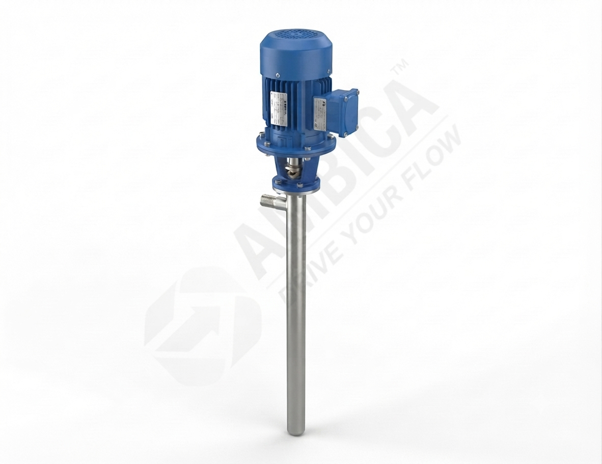

Chemical Processing
Transfer of selected process liquids between drums and receiving vessels after confirming material compatibility.

The AMTSBP-100S is an electric motor-operated screw-type drum transfer pump featuring SS316 stainless steel construction. It is intended for moving compatible industrial liquids from drums and suitable containers where controlled, practical liquid handling is required.
Please confirm liquid compatibility and operating conditions and operating conditions before placing an order.
The AMTSBP-100S electric motor-operated screw-type barrel pump is designed for applications that require liquid to be transferred from a drum or compatible container to another process point. Its SS316 stainless steel construction makes it a candidate for selected industrial duties where stainless steel wetted parts are specified.
With an approximate flow rating of 20–22 litres per minute and a listed maximum head of 10 metres, this model can be evaluated for suitable liquid-transfer operations. Actual performance varies with liquid properties, delivery-line dimensions, elevation, fittings and other system conditions.
Before selecting a pump, identify the liquid being handled, its temperature and viscosity, the required delivery rate and the operating conditions at the installation site. These details help establish whether this configuration is appropriate for the intended duty.
Review the available technical information for this SS316 electric motor-operated screw-type barrel pump model. Confirm final specifications with the manufacturer before purchase.
| Specification | AMTSBP-100S Details |
|---|---|
| Model Number | AMTSBP-100S |
| Product Type | electric motor-operated screw-type barrel pump |
| Construction Material | SS316 stainless steel |
| Inlet Size | Confirm with supplier |
| Outlet Size | Confirm with supplier |
| Approximate Flow Capacity | 20–22 LPM (listed flow range) |
| Maximum Head | 10 metres |
| Suction Tube Length | Confirm tube length with supplier |
| Pump Type | Electric motor-operated screw type |
| Drive Type | Electric |
| Drive Type | Confirm motor power and voltage with supplier |
| Power Requirement | Confirm motor power and voltage with supplier |
| Operating Mechanism | electric motor-operated screw-type operation |
| Net Weight | Confirm with supplier |
| Listed Container Size | 55-gallon / 220-litre drum |
| Intended Duty | Transfer of compatible industrial liquids |
Note: These values are based on the available product details. Flow, head and suitability depend on installation and liquid conditions. Please request the latest technical datasheet for confirmed operating limits.
The AMTSBP-100S may be considered for the following duties when the liquid and operating conditions are compatible with the complete pump assembly.
Transfer of selected process liquids between drums and receiving vessels after confirming material compatibility.
Drum handling for compatible oils and lubricating liquids within the pump's approved viscosity range.
Moving suitable liquids from storage drums to production equipment or intermediate containers.
Liquid transfer in workshops and maintenance areas where an electric motor-operated pump is appropriate for the environment.
Transfer of approved liquids to compatible tanks, containers or packaging equipment.
Selected fluid-handling tasks in industrial facilities, subject to the required flow and head conditions.
Important design and operating details to consider when evaluating this electric motor-operated drum pump.
Stainless steel wetted construction is specified for this model. Suitability depends on the exact liquid, concentration and temperature.
electric motor-operated screw-type operation is intended for applications where electric motor operation is suitable.
The suction tube length should be confirmed for the intended drum-handling arrangement. Check drum depth and opening size.
The model uses a electric motor-operated screw-type mechanism. Confirm internal construction and liquid suitability with the supplier. Consult the supplier for the applicable liquid and solids limits.
The stated 20–22 LPM is the listed flow range, not a guaranteed flow rate at every operating point.
Share your liquid details, required delivery rate and installation conditions to help confirm model suitability.
Match the pump's stated characteristics to your process requirements before finalising a model.
A dedicated barrel-pump format can simplify transferring compatible liquids from suitable drums.
SS316 stainless steel construction provides a defined material option for applications that specify stainless steel wetted parts.
Reviewing inlet, outlet, tube length, operating details and performance requirements helps reduce selection errors.
Share the liquid name, required flow rate, delivery height and operating conditions. Ask our team to confirm the correct configuration and latest technical details.
Ambica Machine Tools provides industrial barrel pump solutions backed by manufacturing experience, a wide product range, quality-focused processes and application support.
Answers to common questions about this electric motor-operated stainless steel drum transfer pump.
It is an electric motor-operated screw-type barrel pump intended to transfer compatible industrial liquids from suitable drums or containers. Confirm the liquid and operating conditions with the supplier before use.
The available specification lists approximately 20–22 litres per minute under open-discharge conditions. Actual flow can differ according to the liquid, delivery height, pipework and other system restrictions.
The model is specified as SS316 stainless steel. Ask the supplier to confirm the exact wetted-part materials and chemical compatibility for your application.
The AMTSBP-100S is driven by electric motor. Confirm motor voltage and power rating with the supplier. Confirm the exact product configuration with the supplier. and suitability for the intended installation before ordering.
Only if the complete pump assembly is compatible with the specific liquid. Compatibility depends on concentration, temperature, viscosity, seals and other wetted components. Obtain confirmation from the supplier before use.
Use the Contact Us or Request a Quotation link and provide the liquid name, required capacity, delivery height, container details and required operating conditions.